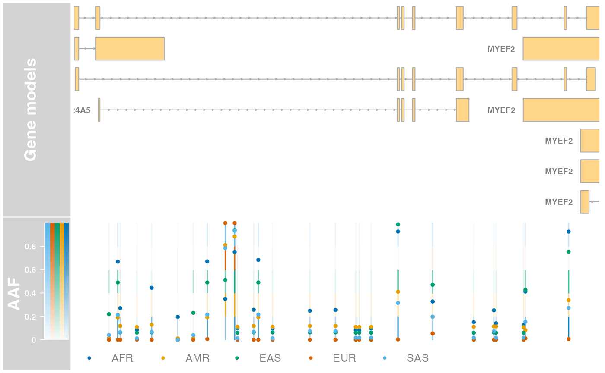
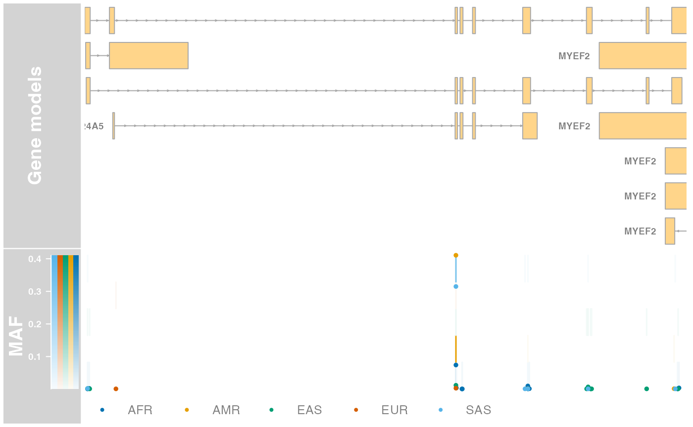
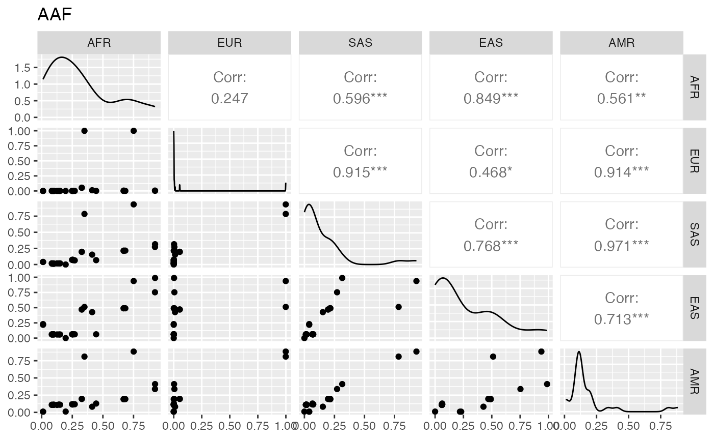

vignettes/Introduction.Rmd
Introduction.RmdAbstract
The VCF Tool Box (TVTB) provides S4 classes and methods to filter, summarise and visualise genetic variation data stored in VCF files pre-processed by the Ensembl Variant Effect Predictor (VEP). In particular, the package extends the FilterRules class (S4Vectors package) to define news classes of filter rules applicable to the various slots ofVCF objects. A Shiny
web-application, the Shiny Variant Explorer (tSVE),
provides a convenient interface to demonstrate those
functionalities integrated in a programming-free environment.
The VCF Tool Box (TVTB) offers S4 classes and methods to filter, summarise and visualise genetic variation data stored in VCF files pre-processed by the Ensembl Variant Effect Predictor (VEP) (McLaren et al. 2010). An RStudio/Shiny web-application, the Shiny Variant Explorer (tSVE), provides a convenient interface to demonstrate those functionalities integrated in a programming-free environment.
Currently, major functionalities in the TVTB package include:
A class to store recurrent parameters of genetic analyses
Genotype counts and allele frequencies
ExpandedVCF objects
(i.e. bi-allelic records)Classes of VCF filter rules
fixed slot of an
VCF objectinfo slot of an
VCF objectVCF objects using the above filter rulesInstructions to install the VCF Tool Box are available here.
Once installed, the package can be loaded and attached as follows:
Most functionalities in TVTB require recurrent information such as:
<phenotype>_<level>_<suffix>,<suffix>.To reduce the burden of repetition during programming, and to
facilitate analyses using consistent sets of parameters, TVTB
implements the TVTBparam class. The TVTBparam
class offer a container for parameters recurrently used across the
package. A TVTBparam object may be initialised as
follows:
tparam <- TVTBparam(Genotypes(
ref = "0|0",
het = c("0|1", "1|0", "0|2", "2|0", "1|2", "2|1"),
alt = c("1|1", "2|2")),
ranges = GenomicRanges::GRangesList(
SLC24A5 = GenomicRanges::GRanges(
seqnames = "15",
IRanges::IRanges(
start = 48413170, end = 48434757)
)
)
)TVTBparam objects have a convenient summary view and
accessor methods:
tparam## class: TVTBparam
## @genos: class: Genotypes
## @ref (hom. ref.): "REF" {0|0}
## @het (heter.): "HET" {0|1, 1|0, 0|2, 2|0, 1|2, 2|1}
## @alt (hom. alt.): "ALT" {1|1, 2|2}
## @ranges: 1 GRanges on 1 sequence(s)
## @aaf (alt. allele freq.): "AAF"
## @maf (minor allele freq.): "MAF"
## @vep (Ensembl VEP key): "CSQ"
## @svp: <ScanVcfParam object>
## @bp: <SerialParam object>In this example:
genos(x)
Genotypes
"0|0"."REF"."0|1",
"1|0", "0|2", "2|0",
"1|2", and "2|1"."HET"."1|1"."ALT".ranges(x)
GRangesList
"15".aaf(x)
"AAF".maf(x)
"MAF".vep(x)
"CSQ".bp(x)
BiocParallelParam
svp(x)
ScanVcfParam
which slot automatically populated with
reduce(unlist(ranges(x)))
Default values are provided for all slots except genotypes, as these may vary more frequently from one data set to another (e.g. phased, unphased, imputed).
Functionalities in TVTB support
CollapsedVCF and ExpandedVCF objects (both
extending the virtual class VCF) of the VariantAnnotation
package.
Typically, CollapsedVCF objects are produced by the
VariantAnnotation
readVcf method after parsing a VCF file, and
ExpandedVCF objects result of the VariantAnnotation
expand method applied to a CollapsedVCF
object.
Any information that users deem relevant for the analysis may be
imported from VCF files and stored in VCF objects passed to
TVTB
methods. However, to enable the key functionalities of the package, the
slots of a VCF object should include at least the following
information:
fixed(x)
"REF" and "ALT".info(x)
<vep>: where <vep>
stands for the INFO key where the Ensembl VEP predictions are stored in
the VCF object.geno(x)
GT: genotypes.colData(x): phenotypes.In the near future, TVTB functionalities are expected to produce summary statistics and plots faceted by meta-features, each potentially composed of multiple genomic ranges.
For instance, burden tests may be performed on a set of transcripts,
considering only variants in their respective sets of exons. The GenomicRanges
GRangesList class is an ideal container in example, as each
GRanges in the GRangesList would represent a
transcript, and each element in the GRanges would represent
an exon.
Furthermore, TVTBparam objects may be supplied as the
param argument of the VariantAnnotation
readVcf. In this case, the TVTBparam object is
used to import only variants overlapping the relevant genomic regions.
Moreover, the readVcf method also ensured that the
vep slot of the TVTBparam object is present in
the header of the VCF file.
svp <- as(tparam, "ScanVcfParam")
svp## class: ScanVcfParam
## vcfWhich: 1 elements
## vcfFixed: character() [All]
## vcfInfo:
## vcfGeno:
## vcfSamples:Although VCF objects may be constructed without attached
phenotype data, phenotype information is critical to interpret and
compare genetic variants between groups of samples (e.g. burden
of damaging variants in different phenotype levels).
VCF objects accept phenotype information (as S4Vectors
DataFrame) in the colData slot. This practice
has the key advantage of keeping phenotype and genetic information
synchronised through operation such as subsetting and re-ordering,
limiting workspace entropy and
confusion.
An ExpandedVCF object that contains the minimal data
necessary for the rest of the vignette can be created as follows:
Step 1: Import phenotypes
phenoFile <- system.file(
"extdata", "integrated_samples.txt", package = "TVTB")
phenotypes <- S4Vectors::DataFrame(
read.table(file = phenoFile, header = TRUE, row.names = 1))Step 2: Define the VCF file to parse
vcfFile <- system.file(
"extdata", "chr15.phase3_integrated.vcf.gz", package = "TVTB")
tabixVcf <- Rsamtools::TabixFile(file = vcfFile)Step 3: Define VCF import parameters
VariantAnnotation::vcfInfo(svp(tparam)) <- vep(tparam)
VariantAnnotation::vcfGeno(svp(tparam)) <- "GT"
svp(tparam)## class: ScanVcfParam
## vcfWhich: 1 elements
## vcfFixed: character() [All]
## vcfInfo: CSQ
## vcfGeno: GT
## vcfSamples:Of particular interest in the above chunk of code:
TVTBparam constructor previously populated the
which slot of svp with “reduced”
(i.e. non-overlapping) genomic ranges defined in the
ranges slot.vep slot will be
importedStep 4: Import and pre-process variants
# Import variants as a CollapsedVCF object
vcf <- VariantAnnotation::readVcf(
tabixVcf, param = tparam, colData = phenotypes)
# Expand into a ExpandedVCF object (bi-allelic records)
vcf <- VariantAnnotation::expand(x = vcf, row.names = TRUE)Of particular interest in the above chunk of code, the
readVcf method is given:
TVTBparam parameters, invoking the corresponding method
signaturerownames of those phenotypes defines the sample
identifiers that are queried from the VCF file.colData slot of the
resulting VCF object.The result is an ExpandedVCF object that includes
variants in the targeted genomic range(s) and samples:
## class: ExpandedVCF
## dim: 481 2504
## rowRanges(vcf):
## GRanges with 5 metadata columns: paramRangeID, REF, ALT, QUAL, FILTER
## info(vcf):
## DataFrame with 1 column: CSQ
## info(header(vcf)):
## Number Type Description
## CSQ . String Consequence annotations from Ensembl VEP. Format: Allel...
## geno(vcf):
## List of length 1: GT
## geno(header(vcf)):
## Number Type Description
## GT 1 String GenotypeAlthough interesting figures and summary tables may be obtained as
soon as the first ExpandedVCF object is created (see
section Summarising Ensembl VEP predictions),
those methods may benefit from information added to additional INFO keys
after data import, either manually by the user, or through various
methods implemented in the TVTB
package.
For instance, the method addOverallFrequencies uses the
reference homozoygote (REF), heterozygote (HET), and
homozygote alternate (ALT) genotypes defined in the
TVTBparam object stored in the VCF metadata to
obtain the count of each genotype in an ExpandedVCF object.
Immediately thereafter, the method uses those counts to calculate
alternate allele frequency (AAF) and minor allele frequency
(MAF). Finally, the method stores the five calculated values
(REF, HET, ALT, AAF, and
MAF) in INFO keys defined by suffixes also declared in the
TVTBparam object.
initialInfo <- colnames(info(vcf))
vcf <- addOverallFrequencies(vcf = vcf)
setdiff(colnames(info(vcf)), initialInfo)## [1] "REF" "HET" "ALT" "AAF" "MAF"Notably, the addOverallFrequencies method is synonym to
the addFrequencies method missing the argument
phenos:
vcf <- addFrequencies(vcf = vcf, force = TRUE)Similarly, the method addPhenoLevelFrequencies obtains
the count of each genotype in samples associated with given level(s) of
given phenotype(s), and stores the calculated values in INFO keys
defined as <pheno>_<level>_<suffix>, with
suffixes defined in the TVTBparam object stored in the
VCF metadata.
initialInfo <- colnames(info(vcf))
vcf <- addPhenoLevelFrequencies(
vcf = vcf, pheno = "super_pop", level = "AFR")
setdiff(colnames(info(vcf)), initialInfo)## [1] "super_pop_AFR_REF" "super_pop_AFR_HET" "super_pop_AFR_ALT"
## [4] "super_pop_AFR_AAF" "super_pop_AFR_MAF"Notably, the addPhenoLevelFrequencies method is synonym
to the addFrequencies method called with the argument
phenos given as a list where names are
phenotypes, and values are character vectors of levels to
process within each phenotype:
initialInfo <- colnames(info(vcf))
vcf <- addFrequencies(
vcf,
list(super_pop = c("EUR", "SAS", "EAS", "AMR"))
)
setdiff(colnames(info(vcf)), initialInfo)## [1] "super_pop_EUR_REF" "super_pop_EUR_HET" "super_pop_EUR_ALT"
## [4] "super_pop_EUR_AAF" "super_pop_EUR_MAF" "super_pop_SAS_REF"
## [7] "super_pop_SAS_HET" "super_pop_SAS_ALT" "super_pop_SAS_AAF"
## [10] "super_pop_SAS_MAF" "super_pop_EAS_REF" "super_pop_EAS_HET"
## [13] "super_pop_EAS_ALT" "super_pop_EAS_AAF" "super_pop_EAS_MAF"
## [16] "super_pop_AMR_REF" "super_pop_AMR_HET" "super_pop_AMR_ALT"
## [19] "super_pop_AMR_AAF" "super_pop_AMR_MAF"In addition, the addFrequencies method can be given a
character vector of phenotypes as the phenos
argument, in which case frequencies are calculated for all
levels of the given phenotypes:
vcf <- addFrequencies(vcf, "pop")
head(grep("^pop_[[:alpha:]]+_REF", colnames(info(vcf)), value = TRUE))## [1] "pop_GBR_REF" "pop_FIN_REF" "pop_CHS_REF" "pop_PUR_REF" "pop_CDX_REF"
## [6] "pop_CLM_REF"Although VCF objects are straightforward to subset using
either indices and row names (as they inherit from the SummarizedExperiment
RangedSummarizedExperiment class), users may wish to
identify variants that pass combinations of criteria based on
information in their fixed slot, info slot,
and Ensembl VEP predictions, a non-trivial task due to those pieces of
information being stored in different slots of the VCF
object, and the 1:N relationship between variants and
EnsemblVEP predictions.
To facilitate the definition of VCF filter rules, and their
application to VCF objects, TVTB extends
the S4Vectors
FilterRules class in four new classes of filter rules:
| Class | Motivation |
|---|---|
VcfFixedRules |
Filter rules applied to the fixed slot
of a VCF object. |
VcfInfoRules |
Filter rules applied to the info slot of
a VCF object. |
VcfVepRules |
Filter rules applied to the Ensembl VEP predictions
stored in a given INFO key of a VCF object. |
VcfFilterRules |
Combination of VcfFixedRules,
VcfInfoRules, and VcfVepRules applicable to a
VCF object. |
Note that FilterRules objects themselves are applicable
to VCF objects, with two important difference from the
above specialised classes:
VCF
slotsVCF slots, for instance:
S4Vectors::FilterRules(list(
mixed = function(x){
VariantAnnotation::fixed(x)[,"FILTER"] == "PASS" &
VariantAnnotation::info(x)[,"MAF"] >= 0.05
}
))## FilterRules of length 1
## names(1): mixedInstances of those classes may be initialised as follows:
VcfFixedRules
fixedR <- VcfFixedRules(list(
pass = expression(FILTER == "PASS"),
qual = expression(QUAL > 20)
))
fixedR## VcfFixedRules of length 2
## names(2): pass qualVcfInfoRules
infoR <- VcfInfoRules(
exprs = list(
rare = expression(MAF < 0.01 & MAF > 0),
common = expression(MAF > 0.05),
mac_ge3 = expression(HET + 2*ALT >= 3)),
active = c(TRUE, TRUE, FALSE)
)
infoR## VcfInfoRules of length 3
## names(3): rare common mac_ge3The above code chunk illustrates useful features of
FilterRules:
FilterRules are initialised in an active state by
default (evaluating an inactive rule returns TRUE
for all items) The active argument may be used to
initialise specific filter rules in an inactive state.expression (or function) may
refer to multiple columns of the relevant slot in the VCF
object.VCF
object.VcfVepRules
vepR <- VcfVepRules(exprs = list(
missense = expression(Consequence %in% c("missense_variant")),
CADD_gt15 = expression(CADD_PHRED > 15)
))
vepR## VcfVepRules of length 2
## names(2): missense CADD_gt15VcfFilterRules
VcfFilterRules combine VCF filter rules of different
types in a single object.
vcfRules <- VcfFilterRules(fixedR, infoR, vepR)
vcfRules## VcfFilterRules of length 7
## names(7): pass qual rare common mac_ge3 missense CADD_gt15This vignette offers only a brief peek into the utility and
flexibility of VCF filter rules. More (complex) examples are given in a
separate vignette, including filter rules using functions and pattern
matching. The documentation of the S4Vectors
package—where the parent class FilterRules is defined—can
also be a source of inspiration.
As the above classes of VCF filter rules inherit from the
S4Vectors
FilterRules class, they also benefit from its accessors and
methods. For instance, VCF filter rules can easily be toggled between
active and inactive states:
active(vcfRules)["CADD_gt15"] <- FALSE
active(vcfRules)## pass qual rare common mac_ge3 missense CADD_gt15
## TRUE TRUE TRUE TRUE FALSE TRUE FALSEA separate vignette describes in greater detail the use of classes that contain VCF filter rules.
Once defined, the above filter rules can be applied to
ExpandedVCF objects, in the same way as
FilterRules are evaluated in a given environment (see the
S4Vectors
documentation):
## Mode FALSE
## logical 481## Mode FALSE
## logical 481
summary(evalSeparately(expr = vcfRules, envir = vcf))## pass qual rare common mac_ge3
## Mode:logical Mode:logical Mode :logical Mode :logical Mode:logical
## TRUE:481 TRUE:481 FALSE:45 FALSE:453 TRUE:481
## TRUE :436 TRUE :28
## missense CADD_gt15
## Mode :logical Mode:logical
## FALSE:454 TRUE:481
## TRUE :27Let us show the alternate allele frequency (AAF) of common variants, estimated in each super-population, in the context of the transcripts ovelapping the region of interest.
In the MAF track:
plotInfo(
subsetByFilter(vcf, vcfRules["common"]), "AAF",
range(GenomicRanges::granges(vcf)),
EnsDb.Hsapiens.v75::EnsDb.Hsapiens.v75,
"super_pop",
zero.rm = FALSE
)
Alternatively, the minor allele frequency (MAF) of missense variants
(as estimated from the entire data set) may be visualised in the same
manner. However, due to the nature of those variants, the
zero.rm argument may be set to TRUE to hide
all data points showing a MAF of 0; thereby variants
actually detected in each super-population are emphasised even at low
frequencies.
plotInfo(
subsetByFilter(vcf, vcfRules["missense"]), "MAF",
range(GenomicRanges::granges(vcf)),
EnsDb.Hsapiens.v75::EnsDb.Hsapiens.v75,
"super_pop",
zero.rm = TRUE
)
Using the GGally
ggpairs method, let us make a matrix of plots for common
variants, showing:
pairsInfo(subsetByFilter(vcf, vcfRules["common"]), "AAF", "super_pop")
Note that the ellipsis ... allows a high degree of
customisation, as it passes additional arguments to the underlying
ggpairs method.
This section presents upcoming features.
As soon as genetic and phenotypic information are imported into an
ExpandedVCF object, or after the object was extended with
additional information, the scientific value of the data may be revealed
by a variety of summary statistics and graphical representations. This
section will soon present several ideas being implemented in
TVTB,
for instance:
Dr. Stefan Gräf and Mr. Matthias Haimel for advice on the VCF file format and the Ensembl VEP script. Prof. Martin Wilkins for his trust and support. Dr. Michael Lawrence for his helpful code review and suggestions.
Last but not least, the amazing collaborative effort of the
rep("many",n) Bioconductor developers whose hard
work appears through the dependencies of this package.
Here is the output of sessionInfo() on the system on
which this document was compiled:
## R version 4.4.1 (2024-06-14)
## Platform: aarch64-apple-darwin20
## Running under: macOS Sonoma 14.5
##
## Matrix products: default
## BLAS: /Library/Frameworks/R.framework/Versions/4.4-arm64/Resources/lib/libRblas.0.dylib
## LAPACK: /Library/Frameworks/R.framework/Versions/4.4-arm64/Resources/lib/libRlapack.dylib; LAPACK version 3.12.0
##
## locale:
## [1] en_US.UTF-8/en_US.UTF-8/en_US.UTF-8/C/en_US.UTF-8/en_US.UTF-8
##
## time zone: UTC
## tzcode source: internal
##
## attached base packages:
## [1] stats graphics grDevices utils datasets methods base
##
## other attached packages:
## [1] TVTB_1.31.2 knitr_1.47 BiocStyle_2.33.1
##
## loaded via a namespace (and not attached):
## [1] RColorBrewer_1.1-3 rstudioapi_0.16.0
## [3] jsonlite_1.8.8 magrittr_2.0.3
## [5] GenomicFeatures_1.57.0 farver_2.1.2
## [7] rmarkdown_2.27 fs_1.6.4
## [9] BiocIO_1.15.0 zlibbioc_1.51.1
## [11] ragg_1.3.2 vctrs_0.6.5
## [13] memoise_2.0.1 Rsamtools_2.21.0
## [15] RCurl_1.98-1.14 base64enc_0.1-3
## [17] htmltools_0.5.8.1 S4Arrays_1.5.3
## [19] progress_1.2.3 curl_5.2.1
## [21] SparseArray_1.5.12 Formula_1.2-5
## [23] sass_0.4.9 bslib_0.7.0
## [25] htmlwidgets_1.6.4 desc_1.4.3
## [27] plyr_1.8.9 Gviz_1.49.0
## [29] httr2_1.0.1 cachem_1.1.0
## [31] GenomicAlignments_1.41.0 lifecycle_1.0.4
## [33] pkgconfig_2.0.3 Matrix_1.7-0
## [35] R6_2.5.1 fastmap_1.2.0
## [37] GenomeInfoDbData_1.2.12 MatrixGenerics_1.17.0
## [39] digest_0.6.36 colorspace_2.1-0
## [41] GGally_2.2.1 AnnotationDbi_1.67.0
## [43] S4Vectors_0.43.1 textshaping_0.4.0
## [45] Hmisc_5.1-3 GenomicRanges_1.57.1
## [47] RSQLite_2.3.7 labeling_0.4.3
## [49] filelock_1.0.3 fansi_1.0.6
## [51] httr_1.4.7 abind_1.4-5
## [53] compiler_4.4.1 withr_3.0.0
## [55] bit64_4.0.5 pander_0.6.5
## [57] backports_1.5.0 htmlTable_2.4.2
## [59] BiocParallel_1.39.0 DBI_1.2.3
## [61] ggstats_0.6.0 highr_0.11
## [63] biomaRt_2.61.2 rappdirs_0.3.3
## [65] DelayedArray_0.31.5 rjson_0.2.21
## [67] tools_4.4.1 foreign_0.8-87
## [69] nnet_7.3-19 glue_1.7.0
## [71] restfulr_0.0.15 grid_4.4.1
## [73] checkmate_2.3.1 reshape2_1.4.4
## [75] cluster_2.1.6 generics_0.1.3
## [77] gtable_0.3.5 BSgenome_1.73.0
## [79] ensembldb_2.29.0 tidyr_1.3.1
## [81] data.table_1.15.4 hms_1.1.3
## [83] xml2_1.3.6 utf8_1.2.4
## [85] XVector_0.45.0 BiocGenerics_0.51.0
## [87] pillar_1.9.0 stringr_1.5.1
## [89] limma_3.61.2 dplyr_1.1.4
## [91] BiocFileCache_2.13.0 lattice_0.22-6
## [93] deldir_2.0-4 rtracklayer_1.65.0
## [95] bit_4.0.5 EnsDb.Hsapiens.v75_2.99.0
## [97] biovizBase_1.53.0 tidyselect_1.2.1
## [99] Biostrings_2.73.1 gridExtra_2.3
## [101] bookdown_0.40 ProtGenerics_1.37.0
## [103] IRanges_2.39.1 SummarizedExperiment_1.35.1
## [105] stats4_4.4.1 xfun_0.45
## [107] Biobase_2.65.0 statmod_1.5.0
## [109] matrixStats_1.3.0 stringi_1.8.4
## [111] UCSC.utils_1.1.0 lazyeval_0.2.2
## [113] yaml_2.3.8 evaluate_0.24.0
## [115] codetools_0.2-20 interp_1.1-6
## [117] tibble_3.2.1 BiocManager_1.30.23
## [119] cli_3.6.3 rpart_4.1.23
## [121] systemfonts_1.1.0 munsell_0.5.1
## [123] jquerylib_0.1.4 dichromat_2.0-0.1
## [125] Rcpp_1.0.12 GenomeInfoDb_1.41.1
## [127] dbplyr_2.5.0 png_0.1-8
## [129] XML_3.99-0.17 parallel_4.4.1
## [131] pkgdown_2.0.9.9000 ggplot2_3.5.1
## [133] blob_1.2.4 prettyunits_1.2.0
## [135] jpeg_0.1-10 latticeExtra_0.6-30
## [137] AnnotationFilter_1.29.0 bitops_1.0-7
## [139] VariantAnnotation_1.51.0 scales_1.3.0
## [141] purrr_1.0.2 crayon_1.5.3
## [143] rlang_1.1.4 KEGGREST_1.45.1Pearson, by default↩︎